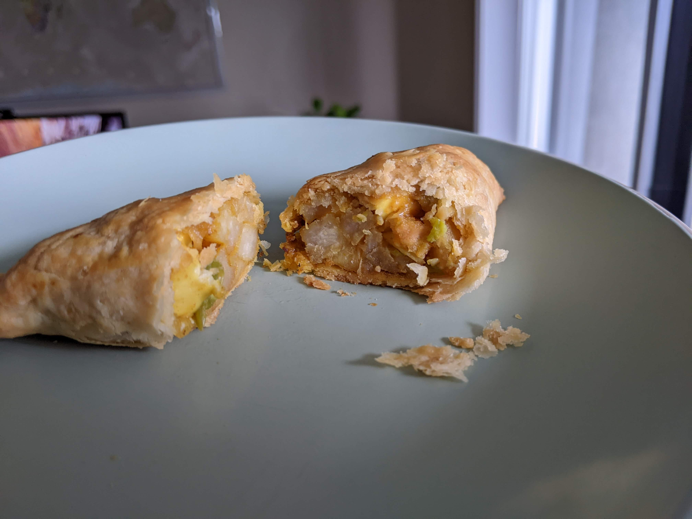

Flaky Pie Crust
Contents
Flaky Pie Crust#
Adapted from a baking class.
{kind=link}
Ingredients#
For two bottom crusts or one double crust:
2 1/2 cups all purpose flour
1 tsp salt
1 Tbsp sugar
2 Tbsp ghee
1 1/2 sticks or 3/4 cup unsalted, chilled butter
1/2 cup + 2 Tbsp cold water
Instructions#
It is crucial that none of the ingredients are warm enough to melt the butter.
In a large mixer or food processor, place flour, salt, sugar, and ghee and mix for 10 seconds.
The resulting mixture appears sandy. On warm days, chill flour for 30 minutes before using.
Cut the butter into small chunks and add to the mixture. Pulse in 1 second increments until the butter is pea-sized.
This is typically 3 pulses, a gentle mix with a fork, and another pulse.
Turn mixture into a mixing bowl and add water in 4 to 5 additions, mixing with a fork after each addition.
It’s important to not knead the dough as it may cause the butter to melt and gluten to develop (which is undesirable). After mixing, the mixture won’t hold together very easily. This is expected, and I use a scraper to gently press the dough together.
Lay out plastic wrap on a counter, move the dough on to the plastic wrap, and wrap tightly.
Wrapping it tighty helps bring the mixture together and avoids them falling apart while rolling the dough later.
Chill for 2 hours before rolling.
Cut / break the dough into two pieces. Repeat this for both pieces. Lightly flour counter and dough on both sides.
Don’t wait for the dough to come to room temperature, it’s important to roll the dough while it’s still cool.
Quarter turn and roll to keep a round shape.
If the edges start cracking (almost always happens), I press them back together after a few turns and rolls and continue.
Roll the dough nearly 4 inches larger than the size of the pie pan.
Place on pie pan, allow dough to rest in bottom edges. Make sure there are no cracks.
Press dough together if they crack.
Place it back in the fridge to cool while you prepare the filling.
Prepare filling, allow it to cool down completely.
If it’s a double crust, make some holes in the top crust and place it on the top. Fold the overhanding dough under the lower crust and crimp if required.
Although the edges can appear a bit thick, they bake really well forming a super flaky, crispy pastry.
I guess this depends on the filling, but almost always bake at 400F for 60 minutes.
We’ve never had a soggy bottom even though we don’t blind bake. I think there are no problems as long as the pie crust is cold when the filling is added.
First baked: 12/19/2021